Aide & guide d'utilisation
Les tâches les plus courantes, pas à pas. Sur chaque capture, l'élément à utiliser est encadré en orange.
01 Créer une séance
Construis une séance dans ta bibliothèque, puis pose-la sur le calendrier.
- Active le rôle Coach. Le panneau Bibliothèque apparaît à gauche.
- Clique sur + Créer une séance.
- Renseigne la discipline, la durée, l'objectif, puis ajoute les blocs (échauffement, intervalles, retour au calme).
- Enregistre : la séance rejoint ta bibliothèque, prête à être planifiée.

02 Planifier une séance dans le calendrier
Une fois la séance créée, place-la sur le bon jour.
- Depuis la Bibliothèque, glisse une séance et dépose-la sur le jour voulu du calendrier.
- Autre méthode : survole un jour et clique le + qui apparaît dans son en-tête pour créer une séance directement à cette date.
- Une séance planifiée peut être re-déplacée d'un jour à l'autre par glisser-déposer.
03 Attribuer une séance ou un cycle à plusieurs athlètes
Plutôt que de replanifier la même séance athlète par athlète, pose-la sur tout un groupe — ou une sélection — en une fois.
- En rôle Coach, dans la Bibliothèque, survole une séance et clique la petite icône Attribuer à plusieurs (deux silhouettes) en haut de la carte. Pour un cycle, utilise le bouton Attribuer à plusieurs sous la carte.
- Choisis la date (ou la semaine de départ pour un cycle).
- Coche les athlètes un par un, ou clique un groupe de club pour sélectionner tous ses membres d'un coup. « Tout sélectionner » coche l'ensemble du roster.
- Clique Attribuer à N athlètes. La séance (ou tout le cycle) est posée sur le calendrier de chacun. Les cibles en % des références s'adaptent au niveau de chaque athlète.
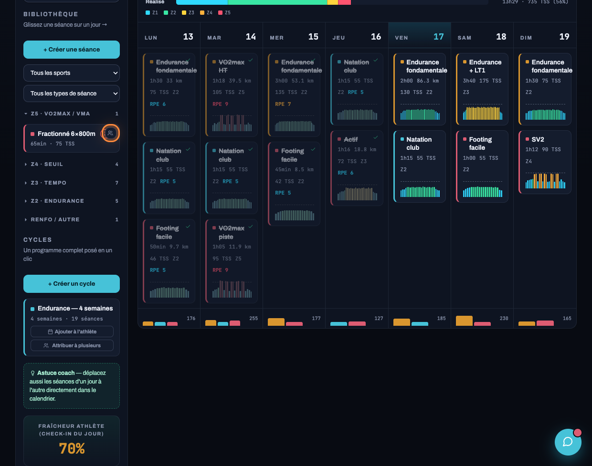
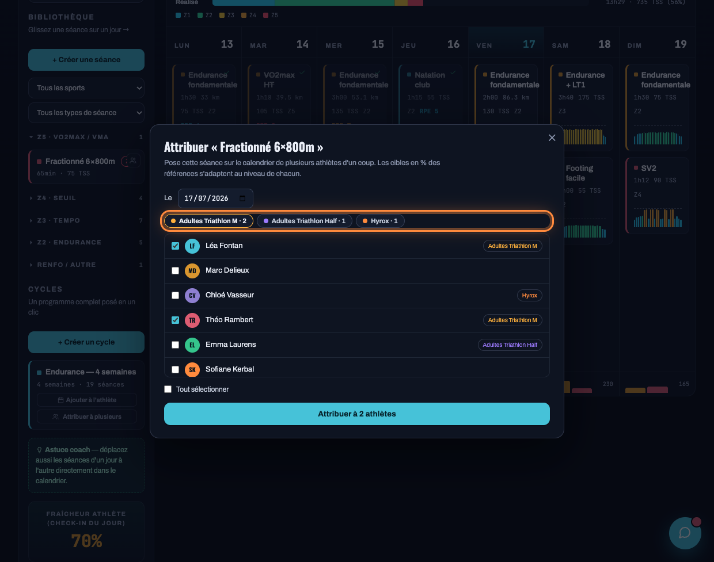
04 Suivre l'adhérence de mes athlètes
Vois d'un coup d'œil qui suit son plan et qui décroche.
- En rôle Coach, clique Suivi de mes athlètes, en haut du panneau de gauche.
- Le tableau liste tout ton roster : forme du jour, adhérence (séances réalisées vs prévues), prochaine course et un statut.
- Repère les athlètes en rouge (« Décroche ») pour les relancer en priorité.

05 Gérer son abonnement
Ton abonnement coach, l'option Assistant IA et l'encaissement de tes athlètes, réunis en bas du panneau coach.
- En rôle Coach, descends le panneau de gauche jusqu'aux cartes d'abonnement.
- Abonnement Sillance (29 €/mois) : clique S'abonner à Sillance. Une fois abonné, le bouton devient Gérer mon abonnement et ouvre ton espace de facturation (changer de carte, résilier).
- Assistant IA coach : Commencer l'essai 14 jours pour activer l'analyse automatique des séances (puis 12 €/mois, résiliable pendant l'essai).
- Fais-toi payer : Relier Stripe pour encaisser tes athlètes, et modifier le tarif de ton suivi.
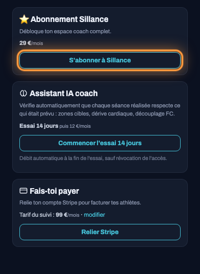
06 Créer un groupe
Organise tes licenciés par niveau ou objectif (jeunes, compétition, Ironman, Hyrox…).
- Active le rôle Club, puis ouvre l'onglet Groupes.
- Clique + Créer un groupe.
- Donne-lui un nom, une couleur, et une description si tu veux.
- Dans Athlètes du groupe, coche les adhérents à y placer.
- Clique Enregistrer le groupe.


07 Déplacer un adhérent d'un groupe à l'autre
Un adhérent appartient à un seul groupe. Pour le déplacer, on le rattache au groupe d'arrivée.
- Active le rôle Club, puis ouvre l'onglet Groupes.
- Sur le groupe d'arrivée, clique Modifier.
- Dans Athlètes du groupe, coche l'adhérent à déplacer. Le cocher ici le retire automatiquement de son ancien groupe.
- Clique Enregistrer le groupe.


08 Créer un créneau et y inviter les athlètes
Un créneau collectif, récurrent, avec ses athlètes déjà invités.
- Rôle Club, onglet Créneaux, clique + Créer un créneau.
- Choisis la discipline, l'intitulé, le jour et l'heure, le lieu et la capacité. Le créneau se répète chaque semaine.
- Renseigne le contenu de la séance : il sera visible par les inscrits.
- Dans Groupe (contenu réservé), choisis un groupe pour que seul ce groupe voie le contenu (ou laisse « Tout le club »).
- Coche Inviter tout le groupe pour ajouter d'un coup tous les athlètes du groupe : ils n'ont plus qu'à confirmer leur présence en un clic.
- Clique Publier le créneau.


09 Faire son check-in du matin
Trente secondes chaque matin pour que le coach adapte le plan.
- Active le rôle Athlète. Le panneau Check-in du jour est à gauche.
- Règle les curseurs Sommeil, Fatigue et Motivation, et renseigne ton poids (le rapport W/kg se met à jour en direct).
- Indique ta disponibilité du jour — OK, fatigué, malade ou blessé (détail au guide suivant).
- Ta fraîcheur se calcule automatiquement en dessous.
- Clique Valider mon check-in. Si ta forme est basse, ton coach est prévenu.

10 Signaler une blessure ou une indisponibilité
Une douleur, un rhume, une grosse semaine de boulot ? Dis-le à ton coach en deux clics — il adapte le plan au lieu de découvrir le problème trop tard.
- Dans le Check-in du jour (rôle Athlète), repère la ligne Disponibilité.
- Choisis ton état : OK, Fatigué, Malade ou Blessé.
- Dès que ce n'est pas « OK », un champ de note apparaît : précise l'essentiel (« douleur mollet droit depuis mardi »).
- Clique Valider mon check-in. Si tu es blessé, ton coach reçoit une alerte prioritaire avec ta note.
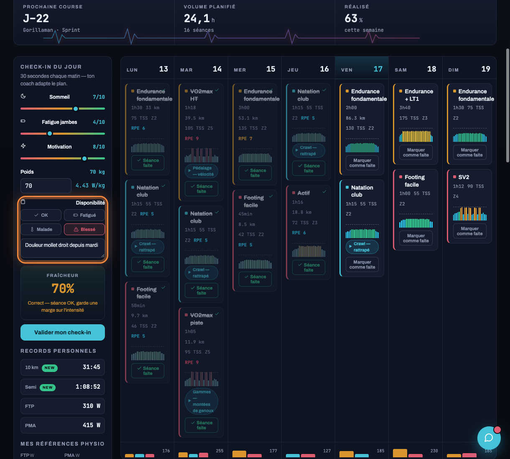
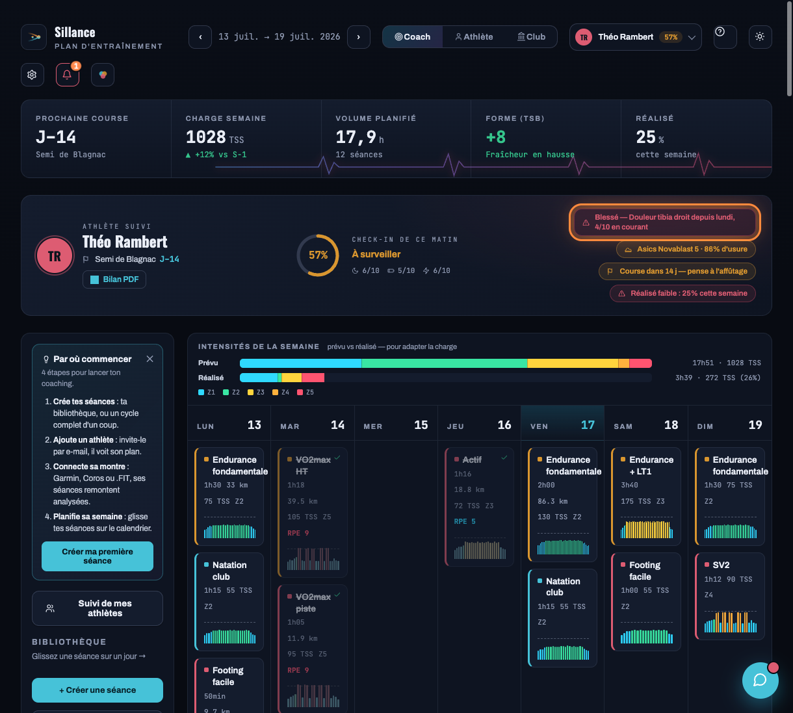
11 Connecter une montre
Fais remonter tes activités dans Sillance automatiquement.
- En rôle Athlète, va au panneau Synchronisation (bas du panneau de gauche).
- Clique Se connecter avec Strava, ou ⌚ Garmin / ⌚ Coros selon ta montre.
- Autorise l'accès dans la fenêtre qui s'ouvre. Tes activités se synchronisent ensuite toutes seules.

12 Importer un fichier .FIT
Pas de montre connectée ? Importe le fichier exporté de ta montre.
- Dans le panneau Synchronisation, clique Importer un fichier.
- Choisis le fichier .FIT, .TCX ou .GPX exporté depuis ta montre (Garmin Connect, Coros, etc.).
- L'activité est analysée et ajoutée à tes séances — et devient visible par ton coach.

13 Ajouter des chaussures
Ajoute tes chaussures pour suivre leur usure et être alerté avant que l'amorti ne se dégrade.
- En rôle Athlète, va à la section Mon matériel et clique + Ajouter un équipement.
- Laisse le type sur Chaussures de course.
- Cherche ton modèle dans le catalogue, ou parcours par marque (Nike, Asics, Hoka…). La durée de vie se remplit automatiquement selon le modèle.
- Indique les km déjà parcourus et, si tu veux, le prix d'achat (pour suivre ton coût au kilomètre).
- Clique Ajouter : la paire rejoint ta bibliothèque, avec son suivi d'usure.

14 Éditer ses références physio
Tes seuils personnels servent à calculer tes zones et à analyser tes séances : garde-les à jour.
- En rôle Athlète, descends le panneau de gauche jusqu'à Mes références physio.
- Renseigne les valeurs que tu connais : FTP et PMA (vélo, en watts), CP vélo, VMA et VC (course), Seuil (allure), CSS (natation), FC max et FC repos.
- Clique Enregistrer mes références. Tes zones et analyses se recalculent aussitôt.
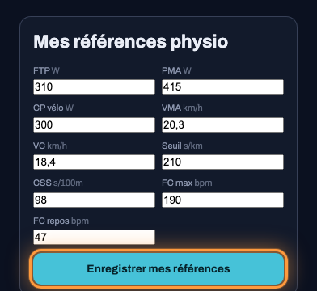
15 Rappel de retest physio
Des références physio trop anciennes faussent tes zones et tes analyses — Sillance te le rappelle.
- En rôle Athlète, descends jusqu'à Mes références physio.
- Sous le titre, une ligne indique depuis combien de temps tu ne les as pas mises à jour.
- Au-delà de 90 jours, le message devient un rappel explicite à retester tes zones.
16 Personnaliser tes réponses rapides dans le chat
Gagne du temps sur les messages qui reviennent tout le temps, avec 20 ou 30 athlètes à suivre.
- En rôle Coach, ouvre la messagerie (bulle en bas à droite).
- Dans la barre de réponses rapides, clique ✎ Gérer tout à droite.
- Tape tes réponses, une par ligne (blessure signalée, question nutrition récurrente, etc.), puis valide.
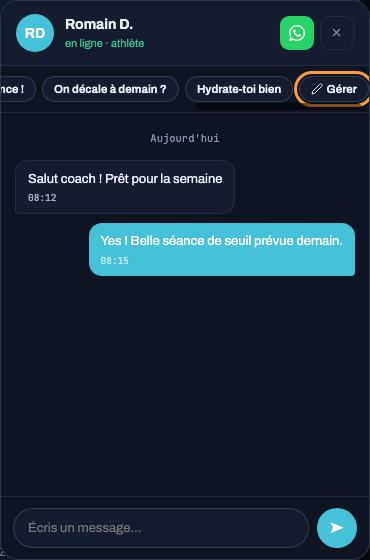
17 Comprendre pourquoi une séance est là
Chaque séance affiche désormais le raisonnement physiologique derrière elle, pas seulement les chiffres.
- En rôle Athlète, clique sur une séance de ton calendrier pour ouvrir sa fiche.
- Le bloc Pourquoi cette séance explique en deux phrases ce que ce type d'effort travaille (endurance, seuil, VMA, récupération…).
18 Repérer une semaine mal répartie
Deux séances à forte intensité le même jour, ou deux jours d'affilée, laissent trop peu de récupération — Sillance le signale avant que tu ne le découvres trop tard.
- En rôle Coach, la bannière apparaît automatiquement au-dessus du calendrier quand la semaine affichée pose problème.
- Elle précise le ou les jours concernés et les séances impliquées.
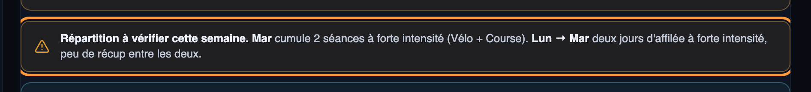
19 Expliquer un ajustement à ton athlète
Quand tu décales ou allèges une séance, une note courte suffit à montrer que ce n'est pas un algorithme qui décide — c'est toi.
- En rôle Coach, survole une carte de séance dans le calendrier : une icône 💬 apparaît en haut à droite.
- Clique dessus et écris ta raison (« Allégé : ta forme du matin était basse »).
- La note apparaît en tête de la fiche séance, côté athlète.
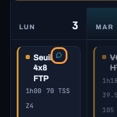
20 Remplir un débrief de course
Un rituel d'après-course qui alimente le cycle suivant, au lieu de laisser l'expérience se perdre.
- En rôle Athlète, repère la carte Débriefs de course dans le panneau de gauche.
- Clique + Ajouter un débrief de course.
- Renseigne résultat, ressenti, nutrition suivie, météo, ce qui a marché ou coincé.
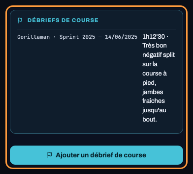
21 Croiser vos ressentis de la semaine
Au-delà du chat libre, un bilan structuré où chacun répond de son côté — et voit la réponse de l'autre.
- Sous le calendrier (rôle Coach ou Athlète), la carte Bilan de la semaine propose : ressenti de charge (trop dur / bien calibré / trop facile) + note côté athlète, note libre côté coach.
- Chacun remplit sa partie ; l'autre la voit en lecture seule, semaine par semaine.
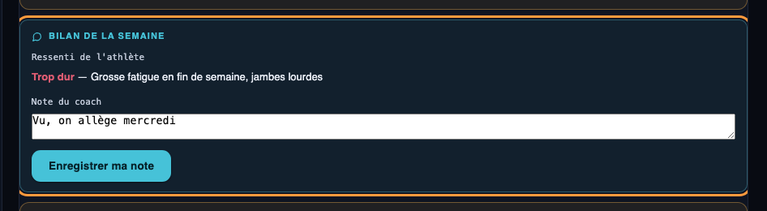
22 Générer une fiche de progression partageable
De quoi te vendre auprès d'un prospect : records battus, charge absorbée, adhérence — en un PDF propre.
- En rôle Coach, dans le bandeau de l'athlète suivi, clique Étude de cas.
- Ajoute une citation courte sur le cycle écoulé (optionnel).
- Le PDF s'ouvre : records améliorés, delta de charge sur 12 semaines, adhérence, ta citation.
23 Voir qui a besoin de toi cette semaine
Plutôt que de cliquer chaque athlète un par un, ton roster est trié par urgence dès que tu ouvres l'app.
- En rôle Coach, le bloc Qui a besoin de toi cette semaine apparaît en tête du panneau de gauche.
- Chaque ligne indique la raison : blessure, maladie, fatigue, forme basse, HRV basse, ou zones jamais retestées.
- Clique un nom pour basculer directement sur son suivi.
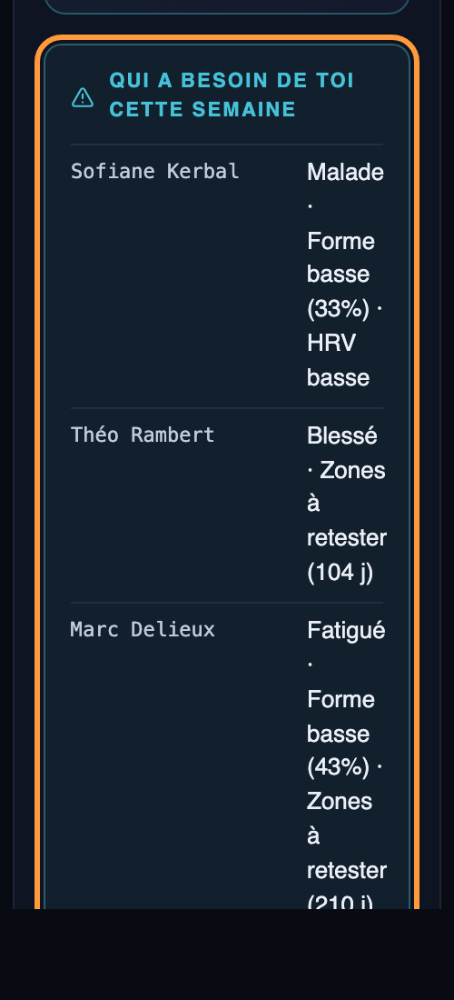
24 Ajouter un coach supplémentaire (co-coaching)
Un athlète peut avoir plusieurs coachs — coach vélo et coach course, ou entraîneur principal et nutritionniste. Tous ont un accès complet ; le rôle n'est qu'une étiquette.
- Coach comme athlète peuvent proposer un ajout : depuis la Fiche athlète (coach) ou la carte Équipe de coachs (athlète), clique + Proposer un coach.
- Renseigne l'email du coach (il doit déjà avoir un compte Sillance) et son rôle libre.
- Double consentement : la partie qui n'a pas initié la demande (l'athlète si un coach a proposé, un coach existant si c'est l'athlète) doit valider avant que l'accès soit actif.
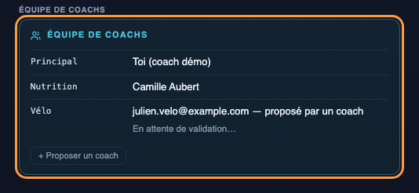
25 Partager une course avec tes proches
Un lien public, sans compte à créer, pour que la famille suive les repères de course et le résultat dès qu'il tombe.
- Coach ou athlète : dans le bandeau de l'athlète suivi (ou la sidebar athlète), clique Partager la course — visible dès qu'une course à venir est enregistrée.
- Ajoute des repères pour les proches si tu veux (« À 30 km, ralentis si FC > 170 »).
- Clique Générer le lien et copie-le : aucune connexion requise pour l'ouvrir.
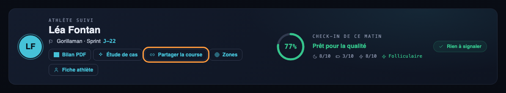